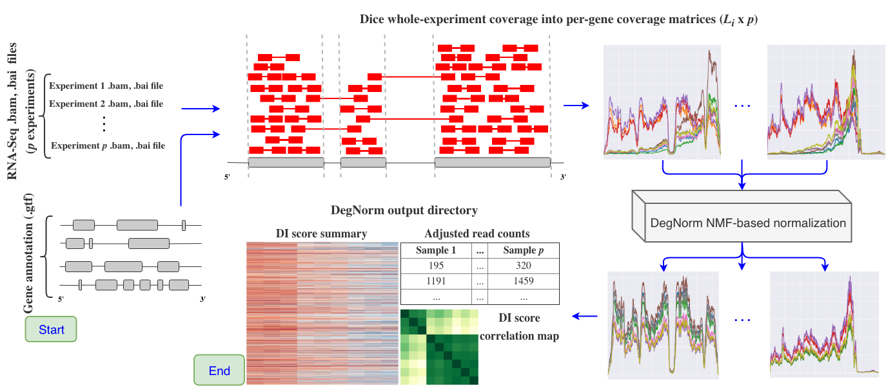

DegNorm Home
DegNorm source code on GitHub

Overview
DegNorm, short for degradation normalization is a genomics pipeline that addresses trascript degradation on a (gene, sample)-specific level that can otherwise substantially bias the results of an RNA-Seq analysis. Most existing global degradation normalization approaches (global in the sense of being across-genes, across-samples) can be ineffective in correcting RNA degradation bias.
A key result from running DegNorm is the adjustment of read counts for transcript degradation heterogeneity on a per-gene, per-sample basis while simultaneously controlling for sequencing depth. Underlying the DegNorm pipeline is the rank-one over-approximation of a gene's coverage matrix, or, the matrix of per-sample, per-nucleotide-aligned reads. For each gene DegNorm will estimate an envelope function and a scale factor for each sample. Samples whose true coverage curve lies well below their estimated coverage curve are considered degraded, and are assigned a degradation index score (or, DI score) of between 0 and 1. Batch effects can be captured by comparing the distribution of DI scores between samples.
The DegNorm pipeline is comprised of the following steps
-
Load in sorted .bam files. DegNorm also requires bam index (.bai) files - these can be created for you if
samtoolsis in your$PATH. DegNorm will determine whether the RNA-Seq experiment was obtained from a paired read or single read platform. -
Parse a genome annotation file (.gtf or .gff). DegNorm determines the relative start and end positions of each gene transcript and each exon comprising each gene on each chromosome. Genes occurring on multiple chromosomes and exons occurring on multiple genes are removed. The total number of genes is referred to as
n. -
Compute the chromosome-wide coverage for each experiment. DegNorm does not use standard coverage tools (e.g.
geneomecov) that do not take into account paired read overlap when computing coverage - here, every match segment of a read's CIGAR score augments nucleotide coverage, excluding paired read overlap. For each experiment, for each chromosome, we save coverage in a compressed Numpy array. There arepexperiments. -
Assess per-gene read counts by counting the number of paired reads falling entirely within the start and end position of every gene. The read count matrix is a
n x pmatrix. -
Break up chromosome coverage matrices into per-gene coverage matrices. Gene matrices are saved to pickle file (a serialized data format for Python), one
.pklfile per chromosome. -
Fit a non-negative matrix factorization with over-approximation model, as outlined in the central DegNorm paper.
-
Save output data to an output directory
- original read counts
- degradation-adjusted read counts
- gene-/experiment-specific degradation index scores
- raw coverage matrices
- normalized coverage matrices
- DegNorm summary report